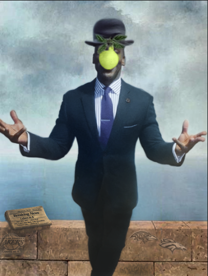

I really liked the idea of mixing a piece of art and a meme together. I'm really into sports and Shannon Sharpe is one of the main people who report basketball. He was previously a football player for the broncos and the ravens but now reports sports. He was made a meme from his "fit checks" and there are thousands of memes that have been made from them. He is also known for making up rhymes and then ending it with, "Lakers in 5". In this image, I mixed the "The Son of Man" (1964) by René Magritte and one of Sharpe's fit checks. I also added subtle details such as the news paper that has some of his rhymes as well as the 2 teams he played for in the NFL.